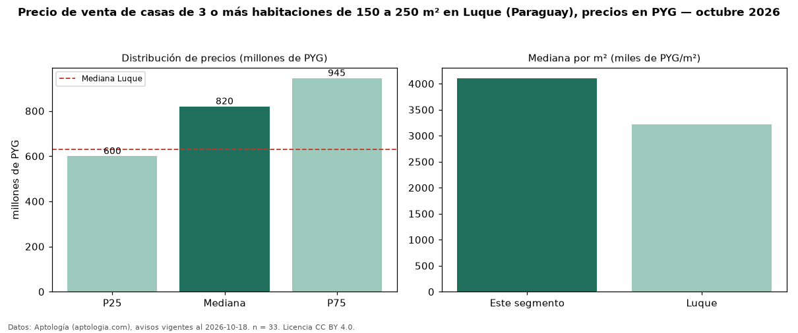

Precio de venta de casas de 3 o más habitaciones de 150 a 250 m² en Luque (Paraguay), precios en PYG — octubre 2026
Con 33 avisos vigentes, el precio mediano de casas de 3 o más habitaciones de 150 a 250 m² en venta en Luque (Paraguay) es PYG 820 millones. Eso es 9 % más que la mediana de las casas de 3 o más habitaciones en venta de Luque (PYG 750 millones, n = 197); este segmento reúne el 17 % de esos avisos. Por metro cuadrado, la mediana es PYG 4,11 millones/m² (n = 33), 25 % por encima de las casas de 3 o más habitaciones en venta de Luque (PYG 3,28 millones/m²). El área mediana anunciada es 180 m². La mediana de todas las casas en venta de Luque es PYG 630 millones (+30 % de diferencia). La mitad central de los avisos va de PYG 600 millones a PYG 945 millones (razón 1,6), una dispersión moderada. Datos: Aptología (aptologia.com), CC BY 4.0 — https://www.aptologia.com/py/venta/luque. Archivos: PDF, CSV con las cifras y gráfica PNG.

| Avisos únicos | 33 |
|---|---|
| Percentil 25 | COP 600.000.000 |
| Mediana | COP 820.000.000 |
| Percentil 75 | COP 945.000.000 |
| Mediana por m² | COP 4.106.280 |
Fuente: avisos vigentes de portales inmobiliarios recopilados por Aptología, deduplicados (mínimo 30 avisos únicos por celda). Precios pedidos, no cerrados. Fecha: 2026-10-18.